Análise de tarefas: HTA e CTT
Autor: Matheus do Vale Lameira, matrícula 202070064 · Validador: Matheus do Vale Lameira
Funcionalidades: Simulador de IRA e Street View · Conteúdo desta página: seção 3 · Tabelas 1 e 2 · Figuras 1 a 14
Documento completo em PDF: Baixar Grupo2MatheusdoValeEtapa5SimuladorIRAStreetView_Final.pdf
Outros artefatos do autor: Visão geral e funcionalidades · Storyboard: enredo · Planejamento da avaliação do storyboard e da análise de tarefas · Relato dos resultados da avaliação do storyboard e da análise de tarefas · Planejamento da avaliação do protótipo de papel · Planejamento do relato dos resultados do protótipo de papel · Anexos A a C: termo, questionário e instruções · Anexos D a G: roteiro, formulário, ficha e cartões
3. Análise de tarefas: HTA e CTT
Elaborei a HTA e a CTT de cada funcionalidade conforme Barbosa e Silva (2010), capítulo 6, seção 6.4 (p. 191 a 205). Na HTA, defino objetivos (e não listas de ações), decomponho cada objetivo em subobjetivos mutuamente exclusivos e exaustivos e indico em cada objetivo o plano que relaciona os seus subobjetivos: sequência (1>2), seleção (1/2) ou paralelo (1+2). No nível mais baixo estão as operações, sublinhadas nos diagramas (p. 192 e 193). Na tabela, cada objetivo ou operação traz input, feedback, plano, problemas e recomendações (Tabela 6.3, p. 194). Na CTT, uso as tarefas abstrata, do usuário, do sistema e interativa e os operadores de relação entre tarefas do livro (p. 203 e 204). Os níveis hierárquicos são lidos como “para considerar T1 realizada, T2 e T3 devem ter sido realizadas” (p. 203).
3.1 Simulador de IRA: HTA
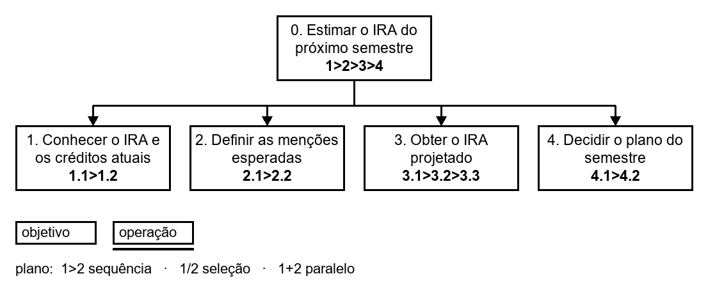
Fonte: Matheus do Vale Lameira (2026).
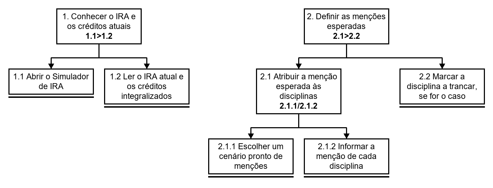
Fonte: Matheus do Vale Lameira (2026).
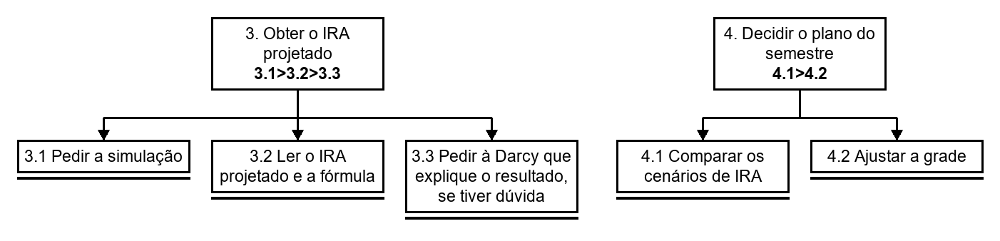
Fonte: Matheus do Vale Lameira (2026).
| objetivos / operações | problemas e recomendações |
|---|---|
| 0. Estimar o IRA do próximo semestre 1>2>3>4 | input: dúvida da aluna sobre o efeito das disciplinas planejadas no IRA, na semana de matrícula feedback: IRA projetado conhecido e usado na decisão do semestre plano: conhecer o IRA atual, definir as menções, obter o IRA projetado e decidir o plano, nessa ordem; a aluna pode voltar do 4 ao 2 para testar outro cenário problema: o NoFluxo não oferecia simulação de IRA, e a estimativa era feita fora do sistema recomendação: simulador de IRA integrado ao montador de grade, calculado pelo sistema a partir do histórico importado |
| 1. Conhecer o IRA e os créditos atuais 1.1>1.2 | input: histórico importado ao NoFluxo feedback: IRA atual e créditos integralizados lidos plano: abrir o simulador e depois ler os valores problema: o IRA está no histórico do SIGAA, mas não aparece no NoFluxo depois da importação recomendação: exibir o IRA atual e os créditos integralizados no painel do estudante |
| 1.1 Abrir o Simulador de IRA | input: NoFluxo aberto feedback: simulador aberto |
| 1.2 Ler o IRA atual e os créditos integralizados | input: simulador aberto feedback: valores lidos |
| 2. Definir as menções esperadas 2.1>2.2 | input: disciplinas planejadas para o próximo semestre feedback: menções esperadas definidas plano: atribuir as menções e, se for o caso, marcar o trancamento problema: o estudante não tem referência de quão difícil cada disciplina é para estimar a menção recomendação: mostrar a dificuldade média das avaliações de disciplinas do próprio NoFluxo |
| 2.1 Atribuir a menção esperada às disciplinas 2.1.1/2.1.2 | plano: escolher um cenário pronto ou informar a menção de cada disciplina problema: tendência ao otimismo, com a menção máxima em todas as disciplinas recomendação: oferecer cenários prontos (otimista, provável e pessimista) |
| 2.1.1 Escolher um cenário pronto de menções | input: lista de disciplinas feedback: menções preenchidas pelo cenário |
| 2.1.2 Informar a menção de cada disciplina | input: lista de disciplinas feedback: menção registrada em cada disciplina |
| 2.2 Marcar a disciplina a trancar, se for o caso | input: dúvida sobre trancar feedback: efeito do trancamento mostrado problema: o efeito de um trancamento no IRA não é intuitivo recomendação: opção de marcar a disciplina como “trancar” e ver o efeito separadamente |
| 3. Obter o IRA projetado 3.1>3.2>3.3 | input: menções esperadas feedback: IRA projetado exibido com a fórmula plano: pedir a simulação, ler o resultado e, se houver dúvida, pedir à Darcy que explique problema: a fórmula do IRA da UnB pondera as menções pelos créditos e pelo período e desconta trancamentos, e poucos estudantes a conhecem recomendação: cálculo feito pelo sistema, com a fórmula documentada em linguagem simples |
| 3.1 Pedir a simulação | input: menções definidas feedback: simulação executada problema: calcular em planilha ou calculadora externa tira a tarefa do NoFluxo e sujeita a erro de digitação e de fórmula recomendação: eliminar esse passo com o simulador integrado |
| 3.2 Ler o IRA projetado e a fórmula | input: resultado exibido feedback: valor e fórmula compreendidos |
| 3.3 Pedir à Darcy que explique o resultado, se tiver dúvida | input: dúvida sobre o número feedback: explicação recebida problema: modelos de linguagem erram aritmética, e o número pode sair errado com aparência de certo recomendação: a Darcy só explica o resultado; o cálculo vem de código determinístico do sistema |
| 4. Decidir o plano do semestre 4.1>4.2 | input: IRA projetado de cada cenário feedback: grade do semestre decidida plano: comparar os cenários e ajustar a grade; repetir de 2 a 4 para testar outro cenário problema: sem ligação entre o IRA simulado e a grade, o estudante refaz a conta a cada troca de disciplina recomendação: recalcular o IRA projetado automaticamente a cada alteração da grade |
| 4.1 Comparar os cenários de IRA | input: IRA projetado de cada cenário feedback: cenário preferido escolhido |
| 4.2 Ajustar a grade | input: cenário escolhido feedback: grade ajustada e IRA recalculado |
3.2 Simulador de IRA: CTT
A CTT descreve a solução de interação do Simulador (p. 205). O objetivo se divide em quatro tarefas abstratas em sequência; a menção definida passa para o cálculo ([]>>) e o IRA projetado passa para a decisão ([]>>). Escolher um cenário pronto e informar a menção de cada disciplina são alternativas ([]). O livro não traz um operador de iteração; a repetição de 2 a 4 aparece no plano 4 da HTA.
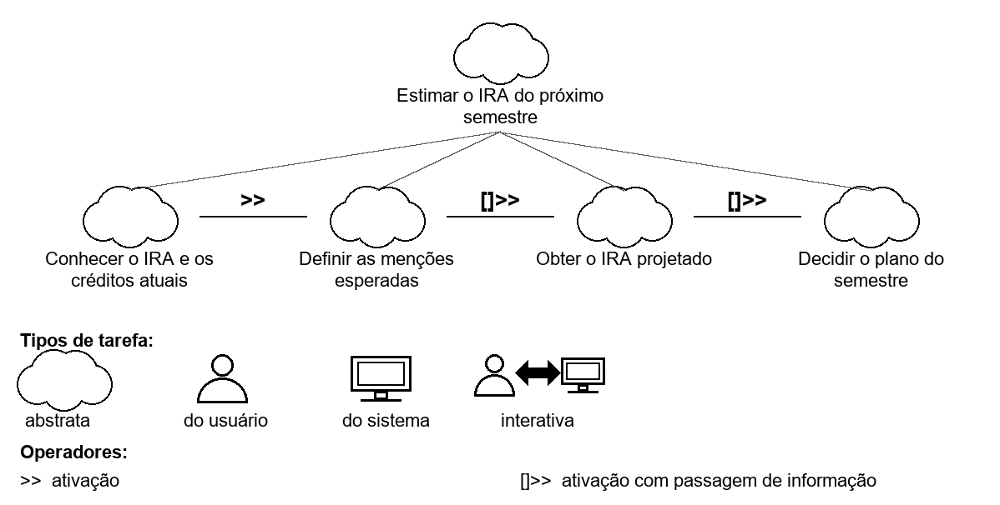
Fonte: Matheus do Vale Lameira (2026).
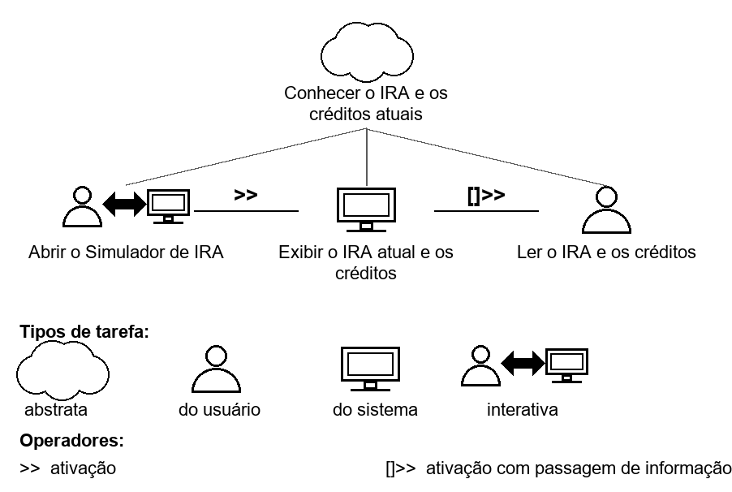
Fonte: Matheus do Vale Lameira (2026).
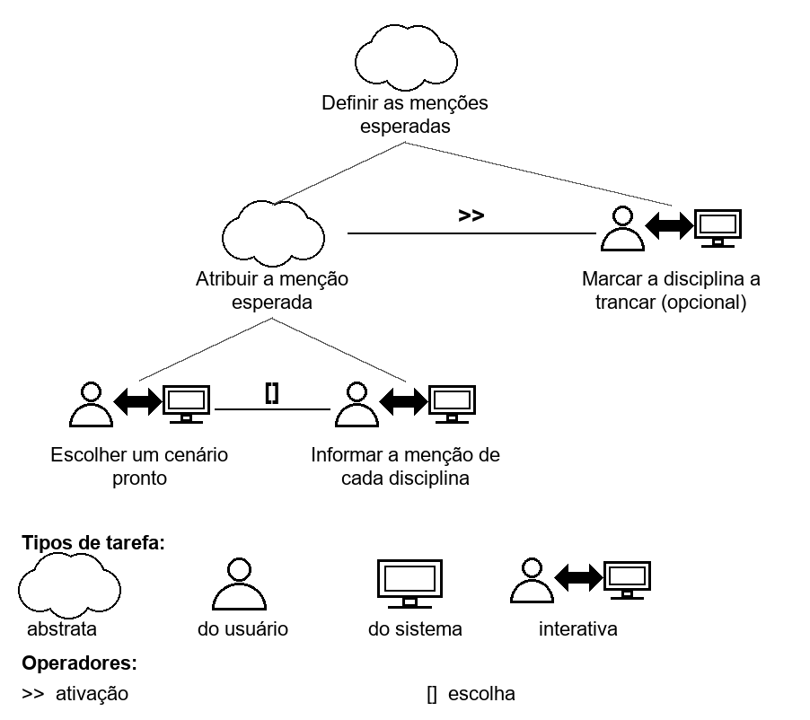
Fonte: Matheus do Vale Lameira (2026).
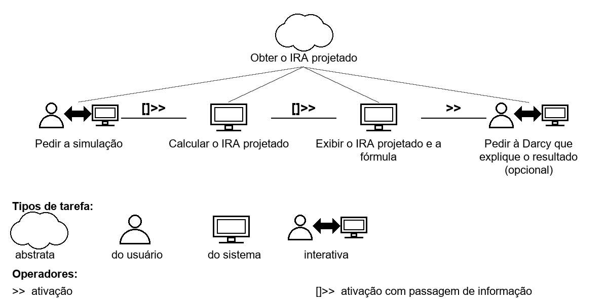
Fonte: Matheus do Vale Lameira (2026).
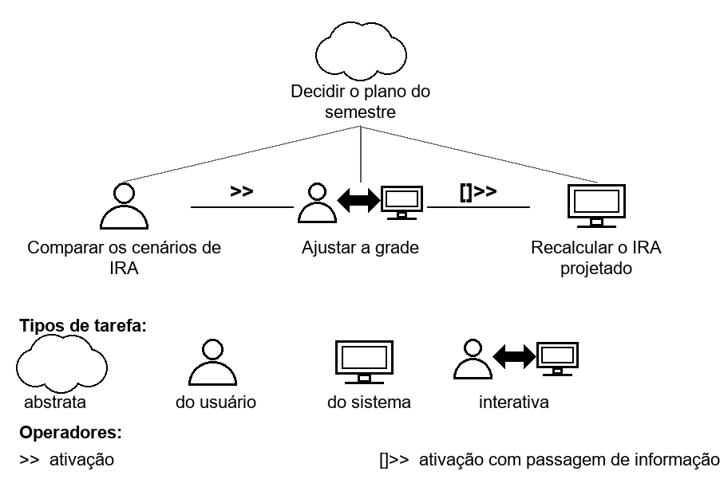
Fonte: Matheus do Vale Lameira (2026).
3.3 Street View: HTA
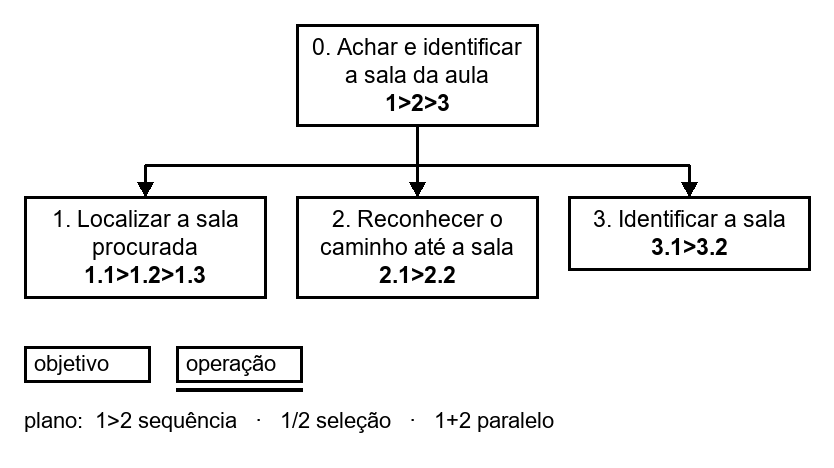
Fonte: Matheus do Vale Lameira (2026).
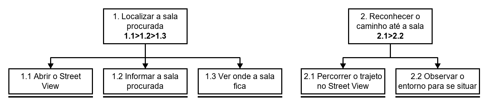
Fonte: Matheus do Vale Lameira (2026).
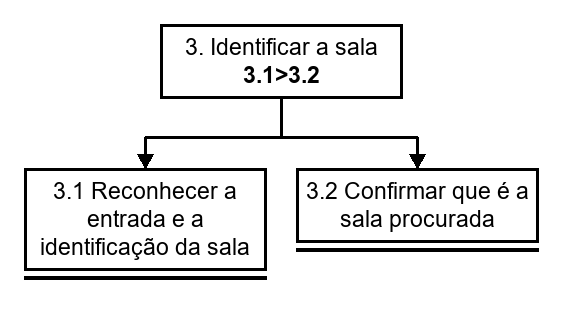
Fonte: Matheus do Vale Lameira (2026).
| objetivos / operações | problemas e recomendações |
|---|---|
| 0. Achar e identificar a sala da aula 1>2>3 | input: aula marcada em uma sala que o aluno não conhece feedback: aluno na sala procurada, a tempo da aula plano: localizar a sala, reconhecer o caminho e identificar a sala; se a sala identificada não for a procurada, voltar ao 1 problema: quem chega há pouco ao campus não sabe onde ficam as salas nem como reconhecê-las recomendação: Street View para achar e identificar salas |
| 1. Localizar a sala procurada 1.1>1.2>1.3 | input: nome ou número da sala feedback: localização da sala vista plano: abrir o Street View, informar a sala e ver onde ela fica problema potencial: o aluno informa a sala de um jeito diferente do cadastrado recomendação: aceitar variações do nome e do número da sala |
| 1.1 Abrir o Street View | input: NoFluxo aberto feedback: Street View aberto |
| 1.2 Informar a sala procurada | input: nome ou número da sala feedback: sala informada aceita |
| 1.3 Ver onde a sala fica | input: sala informada feedback: localização da sala exibida |
| 2. Reconhecer o caminho até a sala 2.1>2.2 | input: localização da sala feedback: caminho reconhecido plano: percorrer o trajeto e observar o entorno problema potencial: o trajeto na tela não corresponde ao que o aluno vê ao andar recomendação: mostrar pontos de referência do entorno ao longo do trajeto |
| 2.1 Percorrer o trajeto no Street View | input: localização da sala feedback: imagem atualizada a cada avanço |
| 2.2 Observar o entorno para se situar | input: imagem do trajeto feedback: aluno se sente situado |
| 3. Identificar a sala 3.1>3.2 | input: porta ou entrada diante do aluno e imagem do Street View feedback: sala confirmada plano: reconhecer a entrada e a identificação e confirmar; se não for a sala procurada, voltar ao 1 problema potencial: portas e corredores parecidos, com a identificação da sala pouco visível recomendação: destacar a identificação da sala no Street View |
| 3.1 Reconhecer a entrada e a identificação da sala | input: porta e imagem do Street View feedback: identificação lida |
| 3.2 Confirmar que é a sala procurada | input: identificação lida feedback: confirmação ou volta à busca |
3.4 Street View: CTT
Na CTT do Street View, o objetivo se divide em três tarefas abstratas em sequência. A localização da sala passa para o reconhecimento do caminho ([]>>), e o reconhecimento do caminho precede a identificação da sala (>>). Percorrer o trajeto e observar o entorno acontecem juntos e trocam informação (|[]|). Depois de reconhecer a entrada e a identificação, o aluno confirma a sala ou volta à busca, que são alternativas ([]).
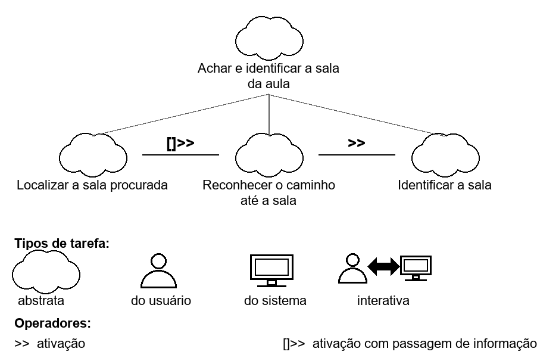
Fonte: Matheus do Vale Lameira (2026).
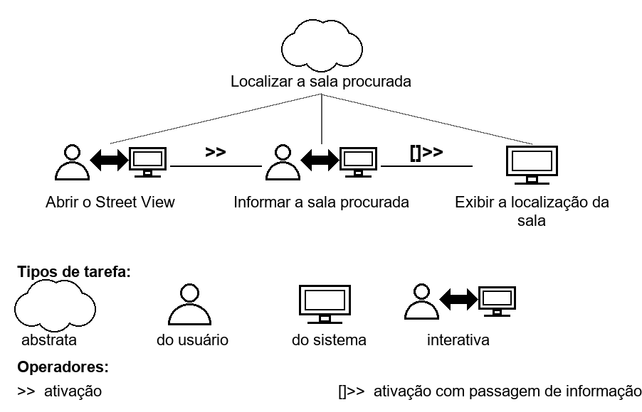
Fonte: Matheus do Vale Lameira (2026).
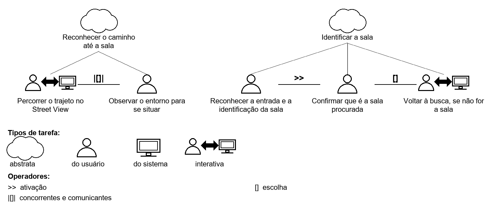
Fonte: Matheus do Vale Lameira (2026).
Histórico de versão
| Versão | Data | Descrição | Autor(es) | Revisor(es) | Declaração de ferramenta de IA |
|---|---|---|---|---|---|
| 1.0 | 23/10/2026 | Publicação de Análise de tarefas, HTA e CTT, a partir do documento Grupo2MatheusdoValeEtapa5SimuladorIRAStreetView_Final, sem alteração do conteúdo | Matheus do Vale Lameira | A definir (validação pendente) | Claude (Anthropic): estruturação da página no padrão da Entrega 5 e revisão da estrutura; o conteúdo é do autor |